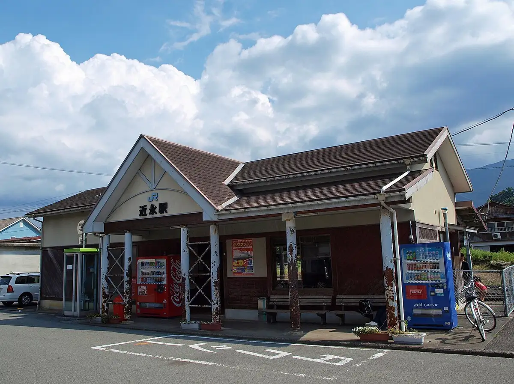
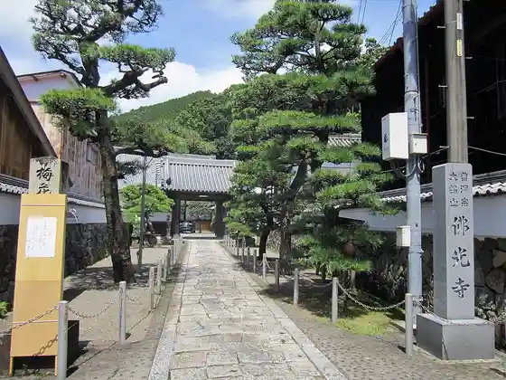
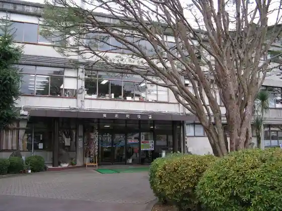
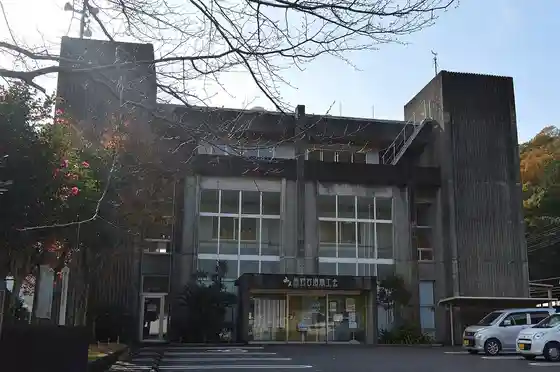
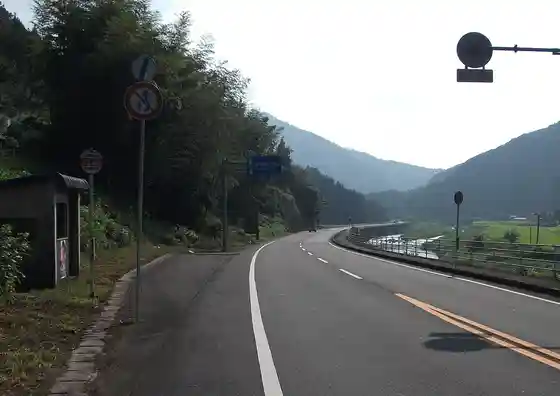

Kihoku
Kihoku · Ehime
Kihoku
Highlighted on the Ehime map.

Stay
NATURE HOTEL NARUKAWA (Neicha Hotel Narukawa)
Dining
Buzaemon Pan Workshop
Rangu
Mimoza
On & Ofu
Hiyoshi Yume Sanchi
Yasuragi
Pateisurii Heri
Resutoran Mori no Mado
Samukoppe
Kihoku Dainingu Fezan Fireru
Shabettohausu Yume So
Gantetsu
Miroku
Irodori Chaya
Sugi no Ie
Narikawa Keikoku Kyuyo Center
Onsen
NATURE HOTEL NARUKAWA (Neicha Hotel Narukawa) Furo
Sights
Kin Ei Eki
Bukko Tera

Kihoku Town Hall

Kihoku Chiiki Shinko Center

Kokudo 320 Go Kihoku Kawakami

Kokudo 320 Go Kihoku Hiromi Shimoono